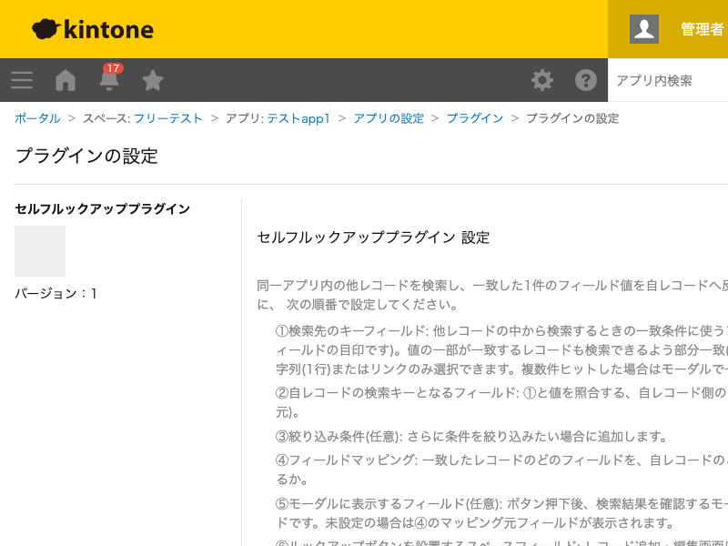

GovAppsプラグイン 安全性を確認できる無料kintoneプラグイン集
同一アプリ内の他レコードを、キーフィールドが一致するレコードの中から絞り込み条件で検索し、 一致したレコードのフィールド値を自レコードへ反映するプラグインです。kintone標準の「ルックアップ フィールド」は参照先を別アプリにしか設定できませんが、本プラグインは同一アプリ内でのルックアップを 可能にします。ボタンを押すと検索結果がモーダルで表示され、内容を確認してから反映するレコードを 選べます。
1つのアプリの中に、コードで管理する代表レコード(取引先コードや品目コードなど、ユニーク設定のあるフィールドやレコード番号で特定できるレコード)と、それを参照する通常レコードが混在しているようなケースで使えます。通常レコード側にコードを入力してボタンを押すと、代表レコードの名称などのフィールド値を自動で反映できます。
絞り込み条件の設定次第で、条件を満たすレコードが複数ヒットすることがあります。その場合はモーダルに候補が一覧表示され、内容を確認してからどのレコードを反映するか選べます。1件だけヒットした場合も、内容を確認してから反映できるよう必ずモーダルで表示されます(自動で即時反映されることはありません)。
キー一致条件に加えて、絞り込み条件(完全一致・含む・以上・以下・より大きい・より小さい・同一月・同一日)をAND結合で複数追加できます。絞り込み条件の比較値は固定値のほか、自レコードの別フィールドを参照することもできるため、「同じ取引先コードで、かつ今月分のレコード」のような検索も設定できます。
検索は自レコードの検索キーとなるフィールドの値を変更したときではなく、レコード追加・編集画面に表示されるボタンを押したときに実行されます。出力先フィールドは追加・編集画面で直接編集できなくなり、②のキーフィールドはレコード一覧のインライン編集で直接編集できなくなります。
kintoneセキュアコーディングガイドラインに沿って実装時にチェックしています。特に重要な点は次のとおりです。
kintone.api()(kintone自身への呼び出し専用の内部ラッパー)のみを使用し、生のfetch/XMLHttpRequestでURLを直接組み立てることはしていません。外部サーバーへの通信は一切行わず、外部ライブラリも使用していません。"や\が含まれていてもクエリ構文が壊れたり意図しない条件で絞り込まれたりしません。innerHTMLではなくtextContentへの代入のみで組み立てており、他レコードの値に特殊文字が含まれていてもDOMに構造として解釈されません。詳細な確認項目・確認日は下記GitHubのチェックリストに全項目を掲載しています。

このプラグインは、レコード追加・編集画面のルックアップボタンを押すたびに、レコード一覧を取得する
REST API(GET /k/v1/records.json、内部向けラッパーのkintone.api()経由)を
1回実行します。ボタンを押さない限りAPIは実行されないため、レコードの閲覧・保存自体では消費されません。
kintoneのAPI実行数制限にカウントされる点にご留意ください。